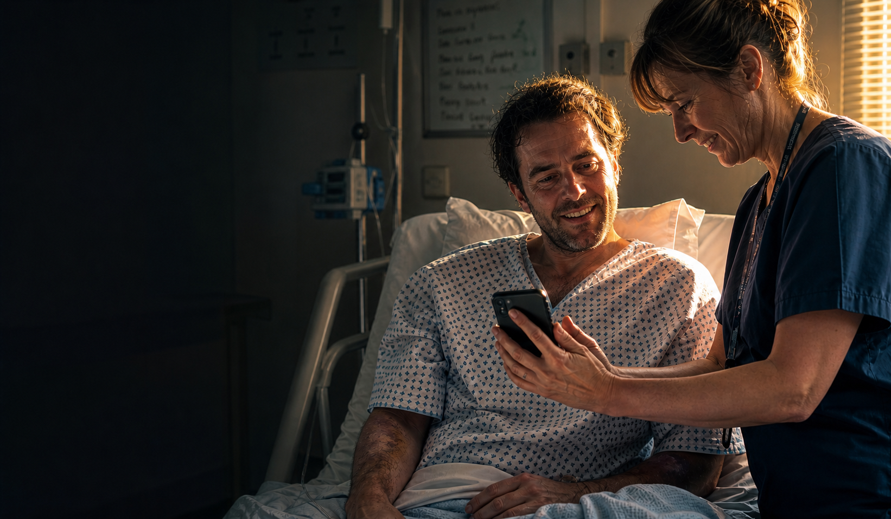

Named contact
One person in Alcohol Care
A named contact who can answer workflow questions, confirm local red lines and help shape the handoff protocol. Not a project lead. Not a new role. One name.
My lovely nurse remebered me and we discussed my reasons "this time" but she was great, totally understood and was really positive about my plan and hunch. She agreed, there was nowhere else to send me. I needed the connfirmed, medical detox, discharge letter urgently, she made that happen. Within a matter days,i got the tick in the bos from CGL and started ehe medication I needed all along. Life changing. My "whole life made sense" kind of changing. This is me keeping that bedside promise.

The last time I was at Addenbrooke's as a patient, my alcohol liaison nurse sat bedside and told me she had no onward pathway to offer. She was brilliant. She cared. But the system had nothing left to give her to give to me.
So I gave her my words. I told her wmy plann and that I needed the discharge letter to confirm certain words and she helped — she got it to me quickly so I could use it to get back to my private psychiatrist and finally get onto Elvanse.
Within three days, everything changed. The chaos, the addiction, the shame, the repeated A&E, intensive care, police, courts, probabtion, the whole journey, my whole life — they weren't failures. They were what happens when the underlying neurological condition stays unresolved and the system treats only the outcome. It's adhd-fuelled addiction, I see it everywhere in recovery and I know you do too.
I told her: "Next time we meet, I won't be your patient. I'll be your partner." This is that next meeting.
Private diagnosis. Private medication. The NHS system had the same information. The intervention that changed everything was available on the NHS. Nobody connected the dots.
A named contact who can answer workflow questions, confirm local red lines and help shape the handoff protocol. Not a project lead. Not a new role. One name.
Innthe Pre-pilot,patiets could be pre-loaded so, a simple one click log is all the demo contribution should be required for the demo element. This contributes to presenntation statistics on the thread and enables true measuremet across touchpoints. In the futture Pilot, when a patient is discharged who meets the ADHD + addiction profile, the next step can be creation of signals for new cases like mine — before they walk out the door, not after they disengage.
We map the pathway, agree the boundarie and design the safest routes and ways to make it work. No commitment required beyond that conversation.
"I've been briefed on OTOS Continuity™ — a non-clinical handoff layer for adults with co-occurring ADHD and addiction in the Cambridge and Peterborough area. I understand it is not a clinical service and does not access or write to any EPR. I'd like to explore whether there is a role for CPFT's Alcohol Care in the scoping conversation for a 12-week pre-pilot."
Edit this note as much or as little as you'd like, then send it to Dean directly. Two minutes. No commitment beyond the note.
Send this note →One note. One conversation. That is all it takes to start.